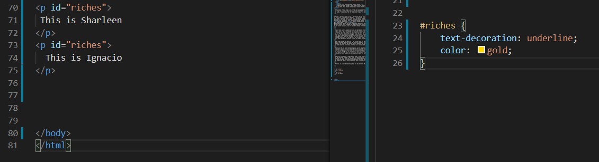
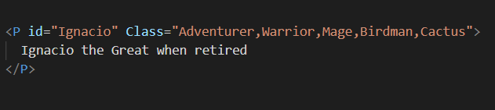

The purpose of this page is to provide an easily understood explanation of the difference between ID and Class in an HTML setting.
In order to push this point across, I have elected to use a narrative focused around common fantasy tropes.
If some of these tropes do not make sense to you, you likely had more friends than me in primary school.
Imagine if you will, you live in a fantastical world, full of terror and potential - somewhere strange and foreign, like Palmerston North.
In this world only one person may have a certain name at a time, this is just like an ID tag.
Your name is Ignacio, this is like an ID tag and is unique to you.
Originally, your name was actually Sharleen however when you named, unbeknownst to your parents there was another Sharleen just down the road who was born and allocated the name (ID) Sharleen first.
Shortly after naming you, your fabulously wealthy parents passed away which is swell because now you inherit their riches right?
Wrong- big wrong! Because another person has taken the ID Sharleen after you, the riches will be allocated to that sharleen instead.
Why? because King & Queen css say so!

Now technically sharing an ID is no big deal however it can be confusing sometimes and can lead to unexpected situations in different environments.
For example, when the above code was run on my machine using Google Chrome, I had the following result which in our analogy would have seen a 50/50 split - truly unreliable!
For this reason it is accepted and best practice to only apply an ID tag once - What does this mean for you? Well now you're a penniless orphan. Goodluck!
To add insult to injury, you are forced to change your name and choose Ignacio.
Years later, you've somehow survived and decided to become an Adventurer.
You'll need a way of defending yourself and choose to be a warrior, looking for work you travel to the warriors guild in Bigtown City
There are now three aspects to your character, your ID which is Ignacio and two class tags, Adventurer and warrior.
At the warriors guild, you meet many other warriors but no other Ignacios
Some of the warriors are also mages, priests and/or birdpeople - anyone can have multiple Classes but of course, only one ID.
Time goes by and the King and Queen css make a ruling that those of Warrior class must wear yellow
The mages guild down the road make fun until the King and Queen make a ruling that all mages must teleport anyone who touches them to another place
The big losers here are the Warriors who are also mages, they are now yellow and must teleport people
This shows how having multiple classes can impose multiple rules on a single person or group.
Some time goes by and there is a new ruling made, all Warriors must now wear Violet and all Jonathans must wear turquoise.
You're startled when you enter the mess hall and your good friend Jonathan has left his violet armour at home and is wearing a blue-green instead.
There is no reason to be afraid, he isnt breaking the law -yes he is a Warrior and should be wearing Violet however he is also the one and only Jonathan (ID vs Class)
ID takes priority over Class, Jonathan is a warrior/mage so while he must still teleport people, his ID tag rule overrides the class tag rule because ID has priority over Class
Years pass by and your reputation grows, you're very busy and it can be difficult to find you
You pay a mage to produce a block which when touched, teleports the user directly to you.
This is only possible with an ID and is a good example of the few important features of an ID
It is worth noting that not every entity which carries a class has to carry an ID or vice versa.
This means a fellow with the ID Peterson who lives in Bigtown City could have no 'occupation' - no Class tag
Likwise you could have a Warrior/Mage/Cheerleader who doesnt have an ID - I suppose in this analogy that would be some form of Golem
Below is a break down of your eventual list of Classes, note that there is only one ID but multiple classes

Hopefully by now you're nodding your head in some form of enlightment, if not, let me put this a little simpler;
An ID should be unique in each code, it should never be used more than once due to potential conflicts whereas a class can be used all over if needed
Classes can stack, you can have multiple classes but only one ID.
ID does have some functionality which Class does not, generally it should only be used in order to implement said functions
An example of this is pulling the user down to a specific section of a web page.
Finally, it is worth mentioning that you may not need ID or Class at all, unlike a name which almost everyone has, ID and Class are only applied when you wish to implement additional functionality.